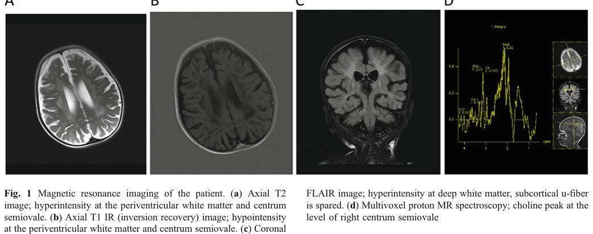

1. Disease Information
1.1 Concise overview
Krabbe disease (globoid cell leukodystrophy, GLD) is a lysosomal leukodystrophy characterized by progressive central and peripheral demyelination and neurodegeneration. While most cases are due to primary GALC deficiency, “in very rare cases” a Krabbe phenotype can be caused by lack of active saposin A, a necessary cofactor for GALC activity in vivo. (szymanska2012diagnosticdifficultiesin pages 11-11)
1.2 Key identifiers
- Saposin A deficiency: OMIM #611722 (kose2018thesecondcase pages 6-7)
- Krabbe disease / globoid cell leukodystrophy: OMIM #245200 (kose2018thesecondcase pages 6-7)
- MONDO / Orphanet / ICD-10/ICD-11 / MeSH: not confirmed from the retrieved sources; should be populated from external disease ontologies in a downstream curation step.
1.3 Synonyms / alternative names
- Saposin A deficiency (PSAP saposin A domain deficiency) (kose2018thesecondcase pages 6-7)
- Krabbe-like leukodystrophy due to saposin A deficiency (concept supported by the Krabbe-phenotype description) (kose2018thesecondcase pages 1-3, szymanska2012diagnosticdifficultiesin pages 11-11)
- Globoid cell leukodystrophy (Krabbe disease) phenotype due to saposin A deficiency (szymanska2012diagnosticdifficultiesin pages 11-11)
1.4 Evidence type
Evidence in this report is derived from: - Individual patient case report(s) (human; aggregated only at “n=2 published cases” level in-source) (kose2018thesecondcase pages 3-6, kose2018thesecondcase pages 11-12) - Aggregated disease-level sources for classic Krabbe disease (newborn screening policy review; incidence and HSCT risk) (ream2025evidenceandrecommendation pages 1-3) - Model organism studies (mouse; defining mechanism and phenotype timing) (matsuda2001amutationin pages 4-6, matsuda2007thefunctionof pages 2-3)
2. Etiology
2.1 Disease causal factors
Primary cause: germline biallelic pathogenic variants in PSAP affecting the saposin A domain, producing functional saposin A deficiency. The second reported human case carried homozygous PSAP NM_002778.3:c.209T>G (p.Val70Gly). (kose2018thesecondcase pages 3-6, kose2018thesecondcase pages 1-3)
Mechanistic cause: saposin A is a non-enzymatic lysosomal activator/stabilizer required for in vivo degradation of galactosylceramide by GALC; saposin A deficiency can therefore impair GalCer catabolism even when the GALC gene is intact, producing a Krabbe phenotype. (kose2018thesecondcase pages 8-9, matsuda2007thefunctionof pages 2-3)
2.2 Risk factors
- Genetic risk: autosomal recessive inheritance is implied by reported homozygous variants (and consanguinity in case reports is common in PSAP-related disorders, though not established here beyond the homozygous state). (kose2018thesecondcase pages 3-6)
- Environmental risk factors: none established in retrieved sources.
2.3 Protective factors / modifiers
No protective variants or environmental protective factors were identified in the retrieved sources.
2.4 Gene–environment interactions
No gene–environment interaction data were identified.
3. Phenotypes (Human)
3.1 Core clinical phenotype (reported 2018 case)
A reported infant (7 months) with saposin A deficiency had a clinical picture described as highly compatible with infantile Krabbe disease, including: - Neurologic regression / loss of milestones (loss of head control, loss of acquired skills) (kose2018thesecondcase pages 1-3) - Seizures (refractory seizures; tonic convulsions) (kose2018thesecondcase pages 1-3) - Hypertonicity and increased deep tendon reflexes (kose2018thesecondcase pages 1-3) - Peripheral neuropathy: severe axonal polyneuropathy (kose2018thesecondcase pages 1-3) - CSF abnormality: elevated CSF protein (135 mg/dL) (kose2018thesecondcase pages 1-3)
Imaging: MRI showed ventriculomegaly and white matter signal abnormalities, described as compatible with Krabbe disease; optic nerve thickening was also noted. (kose2018thesecondcase pages 1-3, kose2018thesecondcase media 3d158019)
3.2 Phenotype characteristics (limitations)
- Age of onset: infantile in the reported human case; earlier/later-onset spectrum is not well-defined due to extremely small number of published human cases accessible in this corpus. (kose2018thesecondcase pages 1-3, kose2018thesecondcase pages 11-12)
- Progression: progressive neurodegeneration is implied by regression and severe neurologic findings. (kose2018thesecondcase pages 1-3)
- Frequency among affected individuals: not quantifiable in retrieved sources (n≈2 published human cases referenced in-source). (kose2018thesecondcase pages 3-6, kose2018thesecondcase pages 11-12)
3.3 Suggested HPO terms (non-exhaustive; mapping based on described features)
- Seizures HP:0001250 (kose2018thesecondcase pages 1-3)
- Developmental regression HP:0002376 (kose2018thesecondcase pages 1-3)
- Hypertonia HP:0001252 (kose2018thesecondcase pages 1-3)
- Hyperreflexia HP:0001347 (kose2018thesecondcase pages 1-3)
- Peripheral neuropathy HP:0009830 / Axonal neuropathy HP:0003477 (kose2018thesecondcase pages 1-3)
- Abnormal brain MRI / White matter abnormalities HP:0002500 / HP:0002669 (kose2018thesecondcase pages 1-3, kose2018thesecondcase media 3d158019)
- Increased cerebrospinal fluid protein HP:0002928 (kose2018thesecondcase pages 1-3)
3.4 Quality-of-life impact
No formal QoL instruments (e.g., PedsQL, PROMIS) were reported in retrieved saposin A deficiency sources; however, the clinical features (seizures, regression, neuropathy) imply severe impairment. (kose2018thesecondcase pages 1-3)
4. Genetic / Molecular Information
4.1 Causal gene
- PSAP (prosaposin), specifically affecting the saposin A domain (kose2018thesecondcase pages 1-3)
4.2 Pathogenic variants (human)
From the retrieved corpus: - PSAP NM_002778.3:c.209T>G (p.Val70Gly), homozygous, associated with infantile Krabbe-like phenotype; GALC gene testing negative in that patient. (kose2018thesecondcase pages 3-6, kose2018thesecondcase pages 1-3, kose2018thesecondcase media 3d158019)
Other human saposin A deficiency was referenced as first reported in 2005 (Spiegel et al.), but that primary paper was not retrievable here; variant details are therefore not extractable from the current evidence set. (kose2018thesecondcase pages 12-12, szymanska2012diagnosticdifficultiesin pages 11-11)
4.3 Functional consequence
In the human case report, biochemical findings supported impaired GalCer degradation and lysosomal dysfunction, consistent with loss of function of saposin A cofactor activity. (kose2018thesecondcase pages 8-9)
4.4 Modifier genes / epigenetics / chromosomal abnormalities
No modifier genes, epigenetic mechanisms, or chromosomal abnormalities specific to saposin A deficiency were identified.
5. Environmental Information
No validated environmental, lifestyle, toxic, or infectious contributors were identified in the retrieved sources.
6. Mechanism / Pathophysiology
6.1 Causal chain (current understanding)
- PSAP saposin A-domain deficiency → reduced availability of saposin A cofactor (kose2018thesecondcase pages 1-3)
- Impaired in vivo GALC-mediated degradation of galactosylceramide (saposin A is “essential/indispensable” for this process in vivo in model systems) (matsuda2007thefunctionof pages 2-3, matsuda2007thefunctionof pages 1-2)
- Accumulation of myelin-enriched glycosphingolipids, including GalCer; psychosine accumulation is implicated in Krabbe biology and was increased in saposin A-deficient mice (modest vs twitcher) (matsuda2001amutationin pages 2-4, matsuda2001amutationin pages 6-7)
- Demyelination and neuroinflammation with infiltration of PAS-positive multinucleated macrophages (“globoid cells”) in CNS/PNS (matsuda2001amutationin pages 2-4, matsuda2007thefunctionof pages 2-3)
- Clinical manifestations: progressive neurologic decline, seizures, neuropathy, and white matter disease (human phenotype) (kose2018thesecondcase pages 1-3)
6.2 Autophagy / lysosome dysfunction (human evidence)
Patient fibroblasts showed altered autophagy consistent with impaired autophagic flux: the report describes a twofold increase of LC3 and p62 and impaired autophagosome–lysosome fusion/maturation. (kose2018thesecondcase pages 3-6, kose2018thesecondcase pages 11-12)
6.3 Biochemical abnormalities
- In the 2018 human case, fibroblasts showed increased neutral glycosphingolipids including GalCer (3.5-fold), LacCer (1.5-fold), Cer (2-fold), GlcCer (1.4-fold) compared with controls. (kose2018thesecondcase pages 8-9)
- Psychosine could not be measured in that patient due to specimen constraints (“only fibroblasts were available”). (kose2018thesecondcase pages 8-9)
6.4 Suggested ontology terms
GO biological process (examples): - sphingolipid catabolic process (GO) (mechanistic basis supported) (matsuda2007thefunctionof pages 2-3) - lysosomal transport / lysosome organization (GO) (lysosome/autophagy involvement) (kose2018thesecondcase pages 11-12) - autophagy (GO) (kose2018thesecondcase pages 11-12)
GO cellular component: - lysosome (GO:0005764) (supported by LAMP1-positive lysosome increase) (kose2018thesecondcase pages 8-9)
Cell Ontology (CL) (examples): - macrophage / microglia-like phagocytes implicated by globoid cells (histologic globoid macrophages) (matsuda2001amutationin pages 2-4) - oligodendrocyte lineage is implicated by demyelination (general Krabbe biology; directly supported in model pathology) (matsuda2007thefunctionof pages 2-3)
7. Anatomical Structures Affected
7.1 Organ/system level
- Central nervous system (white matter leukodystrophy; MRI changes) (kose2018thesecondcase pages 1-3, kose2018thesecondcase media 3d158019)
- Peripheral nervous system (severe axonal polyneuropathy; in mice, marked PNS demyelination and enlarged peripheral nerves) (kose2018thesecondcase pages 1-3, matsuda2001amutationin pages 4-6)
7.2 Tissue/cell level
- Myelinated tracts / white matter (leukodystrophy and demyelination pathology in models) (matsuda2001amutationin pages 2-4, matsuda2007thefunctionof pages 2-3)
- Macrophage-lineage globoid cells (PAS-positive multinucleated macrophages) (matsuda2001amutationin pages 2-4, matsuda2007thefunctionof pages 2-3)
7.3 Subcellular localization
- Lysosome (lysosomal storage biology; increased LAMP1 signal reported) (kose2018thesecondcase pages 8-9)
7.4 Suggested UBERON terms (examples)
- Brain white matter (UBERON) (kose2018thesecondcase media 3d158019)
- Peripheral nerve (UBERON) (matsuda2001amutationin pages 4-6)
8. Temporal Development
8.1 Human
- Infantile onset with rapid neurologic deterioration by 7 months was reported in the 2018 case. (kose2018thesecondcase pages 1-3)
8.2 Model organism temporal profile (saposin A-deficient mice)
- Weakness onset around ~60 days and lifespan around ~120 days in saposin A-deficient mice, indicating a chronic, later-onset course relative to twitcher (GALC-deficient) mice. (matsuda2007thefunctionof pages 2-3, matsuda2007thefunctionof pages 1-2)
9. Inheritance and Population
9.1 Inheritance
Autosomal recessive inheritance is supported by the reported homozygous PSAP variant in the 2018 case. (kose2018thesecondcase pages 3-6)
9.2 Epidemiology
- Saposin A deficiency specifically: extremely rare; the 2018 report states it is the second reported human case. (kose2018thesecondcase pages 3-6, kose2018thesecondcase pages 11-12)
- Krabbe disease overall (mostly GALC-related): a 2025 Pediatrics review reports incidence “0.3–2.6 per 100,000 live births.” (ream2025evidenceandrecommendation pages 1-3)
- A 2023 review cited U.S. estimates of 1 in 310,000 (retrospective analysis) and 1 in 394,000 (New York State NBS). (heller2023preclinicalstudiesin pages 1-2)
Carrier frequency, penetrance, founder effects, and variant geographic distribution for saposin A deficiency were not available in retrieved sources.
10. Diagnostics
10.1 Clinical testing (biochemical)
Key diagnostic pitfall: saposin A deficiency can present as Krabbe disease while having atypical enzymology/genetics for GALC. - In the 2018 saposin A deficiency case, GALC activity was reduced (dried blood; leukocytes) but described as higher than expected for classic Krabbe, and other lysosomal enzymes were normal. (kose2018thesecondcase pages 3-6, kose2018thesecondcase pages 8-9) - Fibroblast lipid studies demonstrated GalCer and related glycosphingolipid accumulation. (kose2018thesecondcase pages 8-9)
Newborn screening context (Krabbe overall): - NBS uses low GALC activity in dried blood spots, with second-tier psychosine testing to improve specificity. (ream2025evidenceandrecommendation pages 1-3) - The 2024 expedited evidence review evaluated/implemented a referral strategy based on psychosine ≥10 nM. (kemperUnknownyearexpeditedevidencebasedreview pages 1-4)
10.2 Imaging
MRI white matter abnormalities consistent with leukodystrophy were reported in the 2018 saposin A deficiency case. (kose2018thesecondcase pages 1-3, kose2018thesecondcase media 3d158019)
10.3 Genetic testing strategy
For a Krabbe phenotype with inconclusive GALC findings, the 2018 case supports: - initial GALC testing (enzyme + gene) followed by - exome sequencing and confirmatory Sanger sequencing to identify PSAP saposin A-domain variants. (kose2018thesecondcase pages 3-6, kose2018thesecondcase pages 1-3)
10.4 Differential diagnosis
- Classic GALC-related Krabbe disease (globoid cell leukodystrophy) remains the main differential. (kose2018thesecondcase pages 6-7, szymanska2012diagnosticdifficultiesin pages 11-11)
- Saposin A deficiency should be considered when Krabbe phenotype is present but standard testing is not definitive. (kose2018thesecondcase pages 11-12)
10.5 Suggested LOINC-style test concepts (since specific LOINC IDs not retrieved)
- GALC enzyme activity (dried blood spot; leukocytes) (kose2018thesecondcase pages 3-6)
- Psychosine (galactosylsphingosine) in dried blood spot / plasma (Krabbe NBS) (kemperUnknownyearexpeditedevidencebasedreview pages 1-4)
- PSAP sequencing (targeted or exome) (kose2018thesecondcase pages 3-6)
11. Outcomes / Prognosis
11.1 Saposin A deficiency (human)
No longitudinal survival outcomes or treatment response were available in the retrieved saposin A deficiency case excerpts.
11.2 Krabbe disease (overall; policy/review evidence)
The 2025 Pediatrics review summarizes infantile Krabbe disease as untreated leading to “death in early childhood.” (Direct quote from abstract-style summary) (ream2025evidenceandrecommendation pages 1-3)
12. Treatment
12.1 Disease-modifying therapy (Krabbe overall)
- HSCT: The 2025 Pediatrics review states: “Hematopoietic stem cell transplantation (HSCT) for IKD approximately 1 month after birth can improve long-term survival but has about a 10% risk of mortality within 100 days.” (direct quote) (ream2025evidenceandrecommendation pages 1-3)
- Newborn screening enabling early HSCT: The 2024 expedited evidence review modeled that with a psychosine ≥10 nM referral threshold, ~11.3 infants/year (range 5.6–20.2) would be diagnosed with infantile Krabbe disease in a 3.65M-birth cohort, with ~1.0 (0.3–1.2) HSCT deaths within 100 days among those transplanted. (kemperUnknownyearexpeditedevidencebasedreview pages 21-24)
12.2 Applicability to saposin A deficiency
No direct evidence in the retrieved human saposin A deficiency case report excerpts documents HSCT or gene therapy use in saposin A deficiency patients. Therefore, extrapolation from GALC-Krabbe therapeutic literature should be done cautiously.
12.3 Suggested MAXO terms (examples)
- Hematopoietic stem cell transplantation (MAXO) (Krabbe overall) (ream2025evidenceandrecommendation pages 1-3)
- Genetic testing (MAXO) / Whole exome sequencing (MAXO) (kose2018thesecondcase pages 3-6)
13. Prevention
13.1 Secondary prevention (screening)
- Newborn screening for Krabbe (overall) is based on dried blood spot GALC activity with psychosine second-tier testing; in 2024, infantile Krabbe disease was added to the U.S. Recommended Uniform Screening Panel (RUSP) as summarized in the 2025 Pediatrics review. (ream2025evidenceandrecommendation pages 1-3)
Primary prevention (environmental) is not applicable based on current evidence.
14. Other Species / Natural Disease
No naturally occurring saposin A deficiency “Krabbe due to saposin A deficiency” was identified in non-human species from the retrieved sources (separate from experimental models).
15. Model Organisms
15.1 Mouse models (saposin A deficiency)
Mouse models provide strong mechanistic support that saposin A deficiency can cause globoid cell leukodystrophy: - Saposin A-deficient mice show Krabbe-like demyelination with PAS-positive multinucleated macrophage/globoid cells in CNS/PNS, weakness at ~60 days, and lifespan ~120 days. (matsuda2007thefunctionof pages 2-3, matsuda2007thefunctionof pages 1-2) - In a saposin A-domain mutant mouse model, mean survival was ~122±17 days versus twitcher ~48±5 days, and brain GALC activity was ~half of wild type, consistent with saposin A acting as an essential activator/stabilizer for GALC in vivo. (matsuda2001amutationin pages 4-6)
15.2 Comparative pathology (saposin A vs twitcher)
A comparative clinico-pathological study used demyelination markers (Luxol fast blue loss; PAS-positive macrophages) and compared terminal-stage saposin A-deficient mice at PND 180 vs twitcher at PND 50, emphasizing the later course in saposin A deficiency relative to primary GALC deficiency. (yagi2004comparativeclinicopathologicalstudy pages 1-3)
15.3 Zebrafish (combined saposin deficiency; broader PSAP biology)
A CRISPR-Cas9 zebrafish psap knockout model recapitulated major LSD pathologies including impaired locomotion and severe myelin loss and identified acid sphingomyelinase modulation as a potential therapeutic direction for sphingolipidoses (not specific to isolated saposin A deficiency). (kose2018thesecondcase media bc75f129)
Summary Table (human + models)
Table (click to expand)
| Cohort/model | Age at onset / stage | Key phenotypes | Imaging / pathology | Biochemical findings | Genetic variant / genotype | Rarity / notes |
|---|---|---|---|---|---|---|
| Human case 1: first reported saposin A deficiency presenting as Krabbe disease | Infantile onset; exact onset not available in retrieved context | Krabbe-like / globoid cell leukodystrophy phenotype in an infant (szymanska2012diagnosticdifficultiesin pages 11-11) | Not available in retrieved context | Saposin A deficiency reported as cause of Krabbe phenotype; detailed GALC/psychosine values not available in retrieved context (szymanska2012diagnosticdifficultiesin pages 11-11) | Mutation in saposin A coding region of PSAP; exact HGVS not available in retrieved context (kose2018thesecondcase pages 12-12, szymanska2012diagnosticdifficultiesin pages 11-11) | First human report; establishes that saposin A deficiency can phenocopy Krabbe disease (kose2018thesecondcase pages 12-12, szymanska2012diagnosticdifficultiesin pages 11-11) |
| Human case 2: JIMD Reports 2018 proband | Normal early infancy, then deterioration by 7 months; infantile presentation (kose2018thesecondcase pages 1-3) | Refractory seizures, loss of milestones/head control, feeding difficulty, hypertonicity, increased deep tendon reflexes, severe axonal polyneuropathy, elevated CSF protein 135 mg/dL; phenotype highly compatible with infantile Krabbe disease (kose2018thesecondcase pages 1-3) | Brain MRI: bilateral ventricular enlargement, periventricular/centrum semiovale white matter hyperintensities, optic nerve thickening; MRI compatible with Krabbe disease (kose2018thesecondcase pages 1-3, kose2018thesecondcase media 3d158019) | GALC activity low in dried blood and reduced in leukocytes, but higher than expected for classic Krabbe; other lysosomal enzymes normal. Fibroblasts: GalCer 3.5-fold, LacCer 1.5-fold, Cer 2-fold, GlcCer 1.4-fold vs controls; increased LAMP1-positive lysosomes. Psychosine could not be assessed because only fibroblasts were available (kose2018thesecondcase pages 3-6, kose2018thesecondcase pages 8-9, kose2018thesecondcase pages 6-7, kose2018thesecondcase media 3d158019) | PSAP NM_002778.3:c.209T>G (p.Val70Gly), homozygous, in saposin A domain; GALC gene negative (kose2018thesecondcase pages 3-6, kose2018thesecondcase pages 1-3, kose2018thesecondcase media 3d158019) | Second known human case; authors emphasize extreme rarity and recommend considering PSAP when Krabbe phenotype is present but GALC testing is inconclusive (kose2018thesecondcase pages 3-6, kose2018thesecondcase pages 11-12) |
| Mouse model: saposin A domain mutant / saposin A-deficient (C106F; often denoted SAP-A−/− or A−/−) | Subtle weakness/sluggishness around 60 days to 2.5 months; hind-leg atrophy/paralysis and weight plateau by ~3 months (matsuda2007thefunctionof pages 2-3, matsuda2001amutationin pages 1-2) | Chronic, milder Krabbe-like disease with progressive neuromotor decline; occasional seizures/hyperactivity (matsuda2001amutationin pages 2-4, matsuda2001amutationin pages 1-2) | Demyelination in CNS and PNS; PAS-positive multinucleated macrophages / globoid-like cells around vessels; enlarged peripheral nerves; pathology detectable by ~30 days in some studies (matsuda2001amutationin pages 2-4, matsuda2007thefunctionof pages 1-2, matsuda2001amutationin pages 6-7, yagi2004comparativeclinicopathologicalstudy pages 1-3) | Brain GALC activity ~0.74 ± 0.15 vs 1.41 ± 0.23 nmol/h/mg in wild type; slight brain GalCer increase, marked kidney GalCer increase; brain psychosine ~2–3× normal / approximately doubled by 2 months (matsuda2001amutationin pages 4-6, matsuda2001amutationin pages 2-4, matsuda2001amutationin pages 6-7) | Targeted Psap saposin A-domain C106F mutation disrupting conserved disulfide bond (matsuda2001amutationin pages 1-2, matsuda2001amutationin pages 2-4) | Demonstrates saposin A is indispensable for in vivo GALC-mediated GalCer degradation and that saposin A deficiency is an alternative cause of globoid cell leukodystrophy (matsuda2007thefunctionof pages 2-3, matsuda2007thefunctionof pages 1-2) |
| Mouse comparator: twitcher (classic GALC-deficient Krabbe model) | Earlier onset than saposin A-deficient mice; terminal stage around PND 50 in comparative pathology studies (yagi2004comparativeclinicopathologicalstudy pages 1-3) | Severe, rapidly progressive Krabbe phenotype (matsuda2007thefunctionof pages 1-2, yagi2004comparativeclinicopathologicalstudy pages 1-3) | More severe demyelination and globoid cell pathology than saposin A-deficient mice at earlier ages (matsuda2007thefunctionof pages 1-2, yagi2004comparativeclinicopathologicalstudy pages 1-3) | Much greater psychosine accumulation than saposin A-deficient mice; terminal twitcher mice show markedly elevated psychosine, with saposin A-deficient mice having only modest increases (matsuda2001amutationin pages 2-4, matsuda2001amutationin pages 6-7) | Galc-deficient twitcher genotype (matsuda2007thefunctionof pages 1-2, yagi2004comparativeclinicopathologicalstudy pages 1-3) | Benchmark canonical Krabbe model used to show saposin A deficiency causes a milder, later-onset but mechanistically related leukodystrophy (matsuda2001amutationin pages 4-6, matsuda2007thefunctionof pages 1-2, yagi2004comparativeclinicopathologicalstudy pages 1-3) |
| Mouse comparator: saposin A-deficient vs twitcher lifespan | SAP-A−/− mean survival ~122 ± 17 days vs twitcher ~48 ± 5 days (matsuda2001amutationin pages 4-6) | SAP-A−/− chronic course vs twitcher fulminant course (matsuda2001amutationin pages 4-6, matsuda2007thefunctionof pages 1-2) | SAP-A−/− terminal-stage pathology compared at PND 180 vs twitcher at PND 50 (yagi2004comparativeclinicopathologicalstudy pages 1-3) | SAP-A−/− retains partial GALC-related function / compensation, whereas twitcher lacks primary GALC activity (matsuda2001amutationin pages 4-6, matsuda2007thefunctionof pages 2-3) | Comparative model evidence rather than a separate genotype row (matsuda2001amutationin pages 4-6, yagi2004comparativeclinicopathologicalstudy pages 1-3) | Useful for interpreting why human saposin A deficiency may show Krabbe phenotype despite noncanonical GALC findings (kose2018thesecondcase pages 3-6, matsuda2001amutationin pages 4-6) |
Table: This table summarizes the reported human saposin A deficiency cases with Krabbe-like presentation and the main saposin A animal models used to define disease mechanism. It is useful for comparing clinical rarity, diagnostic findings, and the mechanistic contrast between PSAP/saposin A deficiency and classic GALC-deficient Krabbe disease.
Key gaps / limitations in the current evidence set
- The primary first human saposin A deficiency report (Spiegel et al., 2005) and the psychosine-focused saposin A differential report (Calderwood et al., 2020) were referenced but not retrievable in this tool session; variant-level details and psychosine findings from those sources could not be extracted here. (kose2018thesecondcase pages 12-12, ream2025evidenceandrecommendation pages 8-8)
- MONDO/Orphanet/ICD/MeSH identifiers for “Krabbe disease due to saposin A deficiency” were not available in the retrieved sources.
- No dedicated clinical trials or treatment outcome series for saposin A deficiency (PSAP saposin A domain) were identified in the retrieved corpus; most recent (2023–2025) advances pertain to GALC-Krabbe screening and treatment policy rather than saposin A deficiency specifically. (kemperUnknownyearexpeditedevidencebasedreview pages 21-24, ream2025evidenceandrecommendation pages 1-3)
URLs and publication dates (from retrieved sources)
- Kose et al. JIMD Reports (Jul 2018). https://doi.org/10.1007/8904_2018_114 (kose2018thesecondcase pages 3-6)
- Matsuda et al. Human Molecular Genetics (May 2001). https://doi.org/10.1093/hmg/10.11.1191 (matsuda2001amutationin pages 1-2)
- Matsuda et al. Journal of Neurochemistry (Nov 2007). https://doi.org/10.1111/j.1471-4159.2007.04709.x (matsuda2007thefunctionof pages 2-3)
- Yagi et al. Journal of Neuropathology & Experimental Neurology (Jul 2004). https://doi.org/10.1093/jnen/63.7.721 (yagi2004comparativeclinicopathologicalstudy pages 1-3)
- Ream et al. Pediatrics (Mar/Apr 2025). https://doi.org/10.1542/peds.2024-069152 (ream2025evidenceandrecommendation pages 1-3)
- Kemper et al. HRSA report “Expedited Evidence-Based Review…” (Feb 1, 2024; PDF URL referenced in-source). (kemperUnknownyearexpeditedevidencebasedreview pages 1-4)
References
-
(kose2018thesecondcase pages 1-3): Melis Kose, Secil Akyildiz Demir, Gulcin Akinci, Cenk Eraslan, Unsal Yilmaz, Serdar Ceylaner, Eser Sozmen Yildirim, and Volkan Seyrantepe. The second case of saposin a deficiency and altered autophagy. JIMD reports, 44:43-54, Jul 2018. URL: https://doi.org/10.1007/8904_2018_114, doi:10.1007/8904_2018_114. This article has 11 citations and is from a peer-reviewed journal.
-
(kose2018thesecondcase pages 11-12): Melis Kose, Secil Akyildiz Demir, Gulcin Akinci, Cenk Eraslan, Unsal Yilmaz, Serdar Ceylaner, Eser Sozmen Yildirim, and Volkan Seyrantepe. The second case of saposin a deficiency and altered autophagy. JIMD reports, 44:43-54, Jul 2018. URL: https://doi.org/10.1007/8904_2018_114, doi:10.1007/8904_2018_114. This article has 11 citations and is from a peer-reviewed journal.
-
(szymanska2012diagnosticdifficultiesin pages 11-11): Krystyna Szymańska, Agnieszka Ługowska, Milena Laure-Kamionowska, Monika Bekiesińska-Figatowska, Dorota Gieruszczak-Białek, Małgorzata Musielak, Sabrina Eichler, Anne-Katrin Giese, and Arndt Rolfs. Diagnostic difficulties in krabbe disease: a report of two cases and review of literature. Folia neuropathologica, 50 4:346-56, Aug 2012. URL: https://doi.org/10.5114/fn.2012.32364, doi:10.5114/fn.2012.32364. This article has 31 citations and is from a peer-reviewed journal.
-
(kose2018thesecondcase pages 6-7): Melis Kose, Secil Akyildiz Demir, Gulcin Akinci, Cenk Eraslan, Unsal Yilmaz, Serdar Ceylaner, Eser Sozmen Yildirim, and Volkan Seyrantepe. The second case of saposin a deficiency and altered autophagy. JIMD reports, 44:43-54, Jul 2018. URL: https://doi.org/10.1007/8904_2018_114, doi:10.1007/8904_2018_114. This article has 11 citations and is from a peer-reviewed journal.
-
(kose2018thesecondcase pages 3-6): Melis Kose, Secil Akyildiz Demir, Gulcin Akinci, Cenk Eraslan, Unsal Yilmaz, Serdar Ceylaner, Eser Sozmen Yildirim, and Volkan Seyrantepe. The second case of saposin a deficiency and altered autophagy. JIMD reports, 44:43-54, Jul 2018. URL: https://doi.org/10.1007/8904_2018_114, doi:10.1007/8904_2018_114. This article has 11 citations and is from a peer-reviewed journal.
-
(ream2025evidenceandrecommendation pages 1-3): Margie A. Ream, Wendy K. K. Lam, Scott D. Grosse, Jelili Ojodu, Elizabeth Jones, Lisa A. Prosser, Angela M. Rose, Anne Marie Comeau, Susan Tanksley, Katie P. DiCostanzo, and Alex R. Kemper. Evidence and recommendation for infantile krabbe disease newborn screening. Pediatrics, Mar 2025. URL: https://doi.org/10.1542/peds.2024-069152, doi:10.1542/peds.2024-069152. This article has 7 citations and is from a highest quality peer-reviewed journal.
-
(matsuda2001amutationin pages 4-6): J. Matsuda, M. Vanier, Y. Saito, J. Tohyama, Kinuko Suzuki, and Kunihiko Suzuki. A mutation in the saposin a domain of the sphingolipid activator protein (prosaposin) gene results in a late-onset, chronic form of globoid cell leukodystrophy in the mouse. Human molecular genetics, 10 11:1191-9, May 2001. URL: https://doi.org/10.1093/hmg/10.11.1191, doi:10.1093/hmg/10.11.1191. This article has 173 citations and is from a domain leading peer-reviewed journal.
-
(matsuda2007thefunctionof pages 2-3): Junko Matsuda, Azusa Yoneshige, and Kunihiko Suzuki. The function of sphingolipids in the nervous system: lessons learnt from mouse models of specific sphingolipid activator protein deficiencies. Journal of Neurochemistry, 103:32-38, Nov 2007. URL: https://doi.org/10.1111/j.1471-4159.2007.04709.x, doi:10.1111/j.1471-4159.2007.04709.x. This article has 45 citations and is from a domain leading peer-reviewed journal.
-
(kose2018thesecondcase pages 8-9): Melis Kose, Secil Akyildiz Demir, Gulcin Akinci, Cenk Eraslan, Unsal Yilmaz, Serdar Ceylaner, Eser Sozmen Yildirim, and Volkan Seyrantepe. The second case of saposin a deficiency and altered autophagy. JIMD reports, 44:43-54, Jul 2018. URL: https://doi.org/10.1007/8904_2018_114, doi:10.1007/8904_2018_114. This article has 11 citations and is from a peer-reviewed journal.
-
(kose2018thesecondcase media 3d158019): Melis Kose, Secil Akyildiz Demir, Gulcin Akinci, Cenk Eraslan, Unsal Yilmaz, Serdar Ceylaner, Eser Sozmen Yildirim, and Volkan Seyrantepe. The second case of saposin a deficiency and altered autophagy. JIMD reports, 44:43-54, Jul 2018. URL: https://doi.org/10.1007/8904_2018_114, doi:10.1007/8904_2018_114. This article has 11 citations and is from a peer-reviewed journal.
-
(kose2018thesecondcase pages 12-12): Melis Kose, Secil Akyildiz Demir, Gulcin Akinci, Cenk Eraslan, Unsal Yilmaz, Serdar Ceylaner, Eser Sozmen Yildirim, and Volkan Seyrantepe. The second case of saposin a deficiency and altered autophagy. JIMD reports, 44:43-54, Jul 2018. URL: https://doi.org/10.1007/8904_2018_114, doi:10.1007/8904_2018_114. This article has 11 citations and is from a peer-reviewed journal.
-
(matsuda2007thefunctionof pages 1-2): Junko Matsuda, Azusa Yoneshige, and Kunihiko Suzuki. The function of sphingolipids in the nervous system: lessons learnt from mouse models of specific sphingolipid activator protein deficiencies. Journal of Neurochemistry, 103:32-38, Nov 2007. URL: https://doi.org/10.1111/j.1471-4159.2007.04709.x, doi:10.1111/j.1471-4159.2007.04709.x. This article has 45 citations and is from a domain leading peer-reviewed journal.
-
(matsuda2001amutationin pages 2-4): J. Matsuda, M. Vanier, Y. Saito, J. Tohyama, Kinuko Suzuki, and Kunihiko Suzuki. A mutation in the saposin a domain of the sphingolipid activator protein (prosaposin) gene results in a late-onset, chronic form of globoid cell leukodystrophy in the mouse. Human molecular genetics, 10 11:1191-9, May 2001. URL: https://doi.org/10.1093/hmg/10.11.1191, doi:10.1093/hmg/10.11.1191. This article has 173 citations and is from a domain leading peer-reviewed journal.
-
(matsuda2001amutationin pages 6-7): J. Matsuda, M. Vanier, Y. Saito, J. Tohyama, Kinuko Suzuki, and Kunihiko Suzuki. A mutation in the saposin a domain of the sphingolipid activator protein (prosaposin) gene results in a late-onset, chronic form of globoid cell leukodystrophy in the mouse. Human molecular genetics, 10 11:1191-9, May 2001. URL: https://doi.org/10.1093/hmg/10.11.1191, doi:10.1093/hmg/10.11.1191. This article has 173 citations and is from a domain leading peer-reviewed journal.
-
(heller2023preclinicalstudiesin pages 1-2): Gregory Heller, Allison M. Bradbury, Mark S. Sands, and Ernesto R. Bongarzone. Preclinical studies in krabbe disease: a model for the investigation of novel combination therapies for lysosomal storage diseases. Molecular Therapy, 31:7-23, Jan 2023. URL: https://doi.org/10.1016/j.ymthe.2022.09.017, doi:10.1016/j.ymthe.2022.09.017. This article has 15 citations and is from a highest quality peer-reviewed journal.
-
(kemperUnknownyearexpeditedevidencebasedreview pages 1-4): AR Kemper, KK Lam, M Ream, and K DiCostanzo. Expedited evidence-based review of newborn screening for krabbe disease final report: february 1, 2024. Unknown journal, Unknown year.
-
(kemperUnknownyearexpeditedevidencebasedreview pages 21-24): AR Kemper, KK Lam, M Ream, and K DiCostanzo. Expedited evidence-based review of newborn screening for krabbe disease final report: february 1, 2024. Unknown journal, Unknown year.
-
(yagi2004comparativeclinicopathologicalstudy pages 1-3): Takashi Yagi, Junko Matsuda, Shoichi Takikita, Ikuko Mohri, Kunihiko Suzuki, and Kinuko Suzuki. Comparative clinico-pathological study of saposin-a-deficient (sap-a−/−) and twitcher mice. Journal of Neuropathology & Experimental Neurology, 63:721-734, Jul 2004. URL: https://doi.org/10.1093/jnen/63.7.721, doi:10.1093/jnen/63.7.721. This article has 13 citations and is from a peer-reviewed journal.
-
(kose2018thesecondcase media bc75f129): Melis Kose, Secil Akyildiz Demir, Gulcin Akinci, Cenk Eraslan, Unsal Yilmaz, Serdar Ceylaner, Eser Sozmen Yildirim, and Volkan Seyrantepe. The second case of saposin a deficiency and altered autophagy. JIMD reports, 44:43-54, Jul 2018. URL: https://doi.org/10.1007/8904_2018_114, doi:10.1007/8904_2018_114. This article has 11 citations and is from a peer-reviewed journal.
-
(matsuda2001amutationin pages 1-2): J. Matsuda, M. Vanier, Y. Saito, J. Tohyama, Kinuko Suzuki, and Kunihiko Suzuki. A mutation in the saposin a domain of the sphingolipid activator protein (prosaposin) gene results in a late-onset, chronic form of globoid cell leukodystrophy in the mouse. Human molecular genetics, 10 11:1191-9, May 2001. URL: https://doi.org/10.1093/hmg/10.11.1191, doi:10.1093/hmg/10.11.1191. This article has 173 citations and is from a domain leading peer-reviewed journal.
-
(ream2025evidenceandrecommendation pages 8-8): Margie A. Ream, Wendy K. K. Lam, Scott D. Grosse, Jelili Ojodu, Elizabeth Jones, Lisa A. Prosser, Angela M. Rose, Anne Marie Comeau, Susan Tanksley, Katie P. DiCostanzo, and Alex R. Kemper. Evidence and recommendation for infantile krabbe disease newborn screening. Pediatrics, Mar 2025. URL: https://doi.org/10.1542/peds.2024-069152, doi:10.1542/peds.2024-069152. This article has 7 citations and is from a highest quality peer-reviewed journal.
Artifacts
- Edison artifact artifact-00
